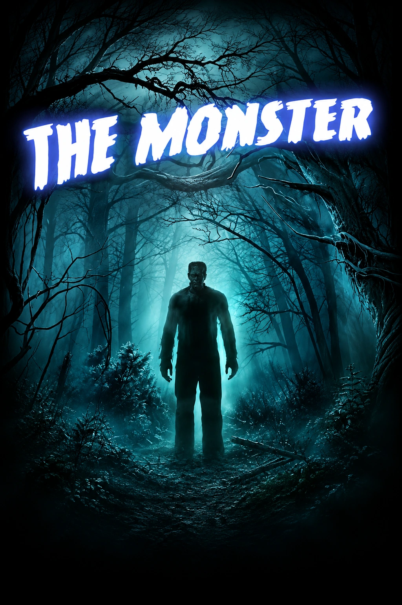

Ficha de catálogo
The Monster
Incognitoescape
Ficha de The Monster de Incognitoescape en Madrid, con datos de ubicación, duración, jugadores y enlaces de consulta.

Ficha de The Monster de Incognitoescape en Madrid, con datos de ubicación, duración, jugadores y enlaces de consulta.
🧪 ¡El legado de Frankenstein sigue vivo... y esta vez vosotros formaréis parte del experimento!
Durante años, los antiguos laboratorios del Doctor Héctor Frankenstein, tataranieto del legendario científico Victor Frankenstein, han permanecido ocultos, guardando los secretos de una de las investigaciones más fascinantes y controvertidas de la historia: ¡el desafío de crear vida a partir de la ciencia!
Ahora, estas misteriosas instalaciones han sido descubiertas y, tras contactar con su propietario, se ha conseguido autorización para rehabilitarlas. Pero el Doctor Frankenstein no está dispuesto a ceder su laboratorio sin obtener algo a cambio...
Una única condición: ayudarle a terminar el ambicioso proyecto científico que dejó inacabado.
⚡ ¿Es realmente posible desafiar las leyes de la naturaleza y dar vida a aquello que no la tiene?
Ha llegado el momento de ponerse la bata de laboratorio, despertar vuestro espíritu científico y adentraros en un mundo de experimentos, descubrimientos y misterios por resolver.
Durante 90 minutos, os convertiréis en los ayudantes del Doctor Frankenstein, enfrentándoos a una misión donde la observación, la lógica, el ingenio y el trabajo en equipo serán fundamentales para avanzar en la investigación. Tendréis que descubrir los secretos que esconde el laboratorio y encontrar la manera de culminar el experimento más extraordinario de su creador.
Pero cuidado... jugar con los límites de la ciencia puede tener consecuencias que nadie es capaz de imaginar.
A pesar de su inquietante temática, The Monster no es una experiencia de terror, sino una aventura de misterio, con una intensidad de miedo muy baja (1/5). Su ambientación inspirada en el universo de Frankenstein aporta ese toque oscuro y enigmático sin convertir la experiencia en una sala de sustos.
Una propuesta ideal para quienes disfrutan de los enigmas, las historias científicas y las aventuras inmersivas. Además, pueden participar menores a partir de los 14 años sin acompañante, o desde los 12 años con un adulto. La experiencia también es apta para embarazadas y accesible para personas con movilidad reducida.
🔬 El laboratorio está preparado, el experimento sigue pendiente y el Doctor Frankenstein necesita vuestra ayuda...
⚡ ¿Seréis capaces de conseguir lo que generaciones de científicos han perseguido durante siglos? ¿Lograréis crear vida o descubriréis que hay secretos que jamás deberían salir a la luz?
¡El experimento está a punto de comenzar y el futuro de la creación está en vuestras manos!